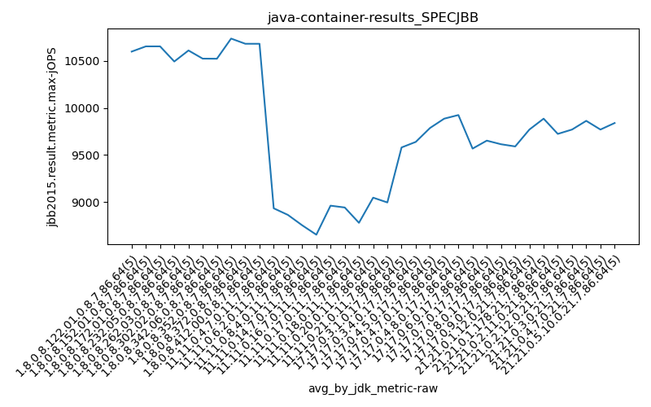
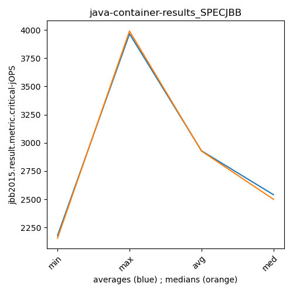

java- SPECJBB
Context at bottom
/home/jvanek/git/benchmarks-in-nested-virtualisation-toolchain/final_results/container_results/container-results_J2DBENCH
java-
SPECJBB
/home/jvanek/git/benchmarks-in-nested-virtualisation-toolchain/final_results/container_results/container-results_RADARGUNs3
java-
SPECJBB
/home/jvanek/git/benchmarks-in-nested-virtualisation-toolchain/final_results/container_results/container-results_RADARGUNs1
java-
SPECJBB
/home/jvanek/git/benchmarks-in-nested-virtualisation-toolchain/final_results/container_results/container-results_DACAPO
java-
SPECJBB
/home/jvanek/git/benchmarks-in-nested-virtualisation-toolchain/final_results/container_results/container-results_SPECJBB
java-
SPECJBB
container-results_SPECJBB
- container-results_SPECJBB - max-jops
- container-results_SPECJBB - critical jops
container-results_SPECJBB - max-jops
Expected number of java- JDKs: 37
1st avgmed_alljdks_metric:
/home/jvanek/git/benchmarks-in-nested-virtualisation-toolchain/final_results/result_processing.py /home/jvanek/git/benchmarks-in-nested-virtualisation-toolchain/final_results/container_results/container-results_SPECJBB jbb2015.result.metric.max-jOPS False
values: [10654, 10654, 10516, 10654, 10516, 10654, 10516, 10654, 10793, 10654, 10654, 10654, 10654, 10516, 10793, 10509, 10278, 10509, 10516, 10654, 10654, 10516, 10436, 10793, 10654, 10378, 10654, 10516, 10516, 10555, 10393, 10654, 10673, 10378, 10516, 10793, 10931, 10654, 10654, 10654, 10516, 10793, 10654, 10654, 10793, 10654, 10654, 10654, 10654, 10793, 9007, 8909, 8772, 8909, 9062, 8810, 8810, 9201, 8810, 8676, 8612, 8831, 8892, 8612, 8810, 8676, 8580, 8612, 8711, 8676, 9107, 8949, 8869, 8909, 8965, 8810, 9107, 8869, 8909, 9007, 8483, 8810, 8909, 8776, 8909, 9305, 9276, 8612, 9123, 8909, 8661, 9062, 9107, 8934, 9206, 9550, 9585, 9641, 9585, 9534, 9427, 9700, 9662, 9585, 9816, 9641, 9686, 9855, 9816, 9931, 9816, 10047, 9816, 9931, 9816, 9855, 9931, 9855, 10047, 9931, 9700, 9354, 9427, 9653, 9700, 9855, 9534, 9700, 9700, 9469, 9700, 9606, 9585, 9748, 9427, 9585, 9700, 9748, 9469, 9447, 9816, 9585, 9931, 9700, 9816, 9931, 9816, 10047, 9816, 9816, 9700, 9700, 9700, 9700, 9816, 9700, 9700, 9816, 9931, 9700, 10047, 9816, 10047, 9700, 9700, 9700, 9700, 10162, 9585, 9700, 9585, 9816, 9931, 9931, 9931]
Expected number of iterations: 5
final number of values: 175 out of 185
Pass rate: 94.6%
values: (8483, 10931, 9769.18857142857, 9700)

** accuracy from all jdks and runs
more is better
MIN: 8483
MAX: 10931
AVG: 9769.18857142857
MED: 9700
Relative differences 1:
MIN-MAX: 22.0 %
MIN-AVG: 13.0 %
MIN-MED: 13.0 %
MAX-MIN: -29.0 %
MAX-AVG: -12.0 %
MAX-MED: -13.0 %
AVG-MED: -1.0 %
stored to java-.properties. sort | uniq that!
2nd avgmed_by_jdk_metric:
values: [10598.8, 10654.2, 10654.2, 10493.2, 10610.6, 10523.8, 10522.8, 10737.2, 10682.0, 10681.8, 8931.8, 8861.4, 8751.4, 8651.0, 8959.8, 8940.4, 8777.4, 9045.0, 8994.0, 9579.0, 9638.0, 9785.8, 9885.2, 9923.8, 9566.8, 9651.6, 9613.2, 9589.8, 9769.6, 9885.2, 9723.2, 9769.4, 9862.0, 9769.4, 9838.8]

values: [10654, 10654, 10654, 10509, 10654, 10516, 10516, 10654, 10654, 10654, 8909, 8810, 8810, 8676, 8949, 8909, 8810, 9123, 9062, 9585, 9662, 9816, 9816, 9931, 9653, 9700, 9606, 9585, 9816, 9816, 9700, 9700, 9816, 9700, 9931]

values: (8651.0, 10737.2, 9769.18857142857, 9769.4)
values: (8676, 10654, 9771.714285714286, 9700)

** accuracy from all jdks where runs were avged
more is better
MIN: 8651.0
MAX: 10737.2
AVG: 9769.18857142857
MED: 9769.4
Relative differences 1:
MIN-MAX: 19.0 %
MIN-AVG: 11.0 %
MIN-MED: 11.0 %
MAX-MIN: -24.0 %
MAX-AVG: -10.0 %
MAX-MED: -10.0 %
AVG-MED: 0.0 %
stored to java-.properties. sort | uniq that!
** accuracy from all jdks where runs were medianed
more is better
MIN: 8676
MAX: 10654
AVG: 9771.714285714286
MED: 9700
Relative differences 1:
MIN-MAX: 19.0 %
MIN-AVG: 11.0 %
MIN-MED: 11.0 %
MAX-MIN: -23.0 %
MAX-AVG: -9.0 %
MAX-MED: -10.0 %
AVG-MED: -1.0 %
stored to java-.properties. sort | uniq that!
container-results_SPECJBB - critical jops
Expected number of java- JDKs: 37
1st avgmed_alljdks_metric:
/home/jvanek/git/benchmarks-in-nested-virtualisation-toolchain/final_results/result_processing.py /home/jvanek/git/benchmarks-in-nested-virtualisation-toolchain/final_results/container_results/container-results_SPECJBB jbb2015.result.metric.critical-jOPS False
values: [2494, 2007, 2001, 2234, 2156, 2322, 2371, 2041, 2389, 2422, 2075, 2155, 2408, 2334, 2229, 2300, 2020, 2299, 2446, 2473, 2205, 2338, 2494, 2130, 2182, 2342, 2082, 2352, 2260, 2171, 2161, 2058, 2231, 2493, 2188, 2205, 2479, 2233, 2042, 2088, 2451, 2198, 2313, 2446, 2124, 2338, 2498, 2495, 2446, 2338, 2003, 2306, 2298, 2309, 2222, 2069, 2179, 2458, 2244, 2141, 2290, 2306, 2293, 1924, 2258, 2447, 2289, 2405, 2103, 2241, 2374, 2327, 2412, 2237, 2526, 2413, 2648, 2406, 2564, 2672, 2482, 2455, 2494, 2490, 2430, 2500, 2767, 2261, 2803, 2429, 2823, 2231, 2472, 2428, 2633, 3378, 3410, 3561, 3396, 3407, 3420, 3365, 3420, 3363, 3438, 3540, 3596, 3579, 3696, 3687, 3627, 3495, 3534, 3445, 3478, 3634, 3534, 3505, 3541, 3415, 3363, 3331, 3456, 3316, 3428, 3405, 3423, 3295, 3305, 3308, 3428, 3399, 3487, 3444, 3444, 3458, 3440, 3453, 3421, 3437, 3919, 3823, 3990, 4061, 4033, 3852, 3952, 3915, 3889, 3793, 3856, 3951, 3830, 3912, 3868, 3781, 3828, 3856, 3873, 3816, 3969, 3912, 3875, 3848, 3941, 3908, 3928, 4096, 3851, 3949, 3845, 3873, 3915, 3957, 3907]

Expected number of iterations: 5
final number of values: 175 out of 185
Pass rate: 94.6%
values: (1924, 4096, 2929.691428571429, 2526)

** accuracy from all jdks and runs
more is better
MIN: 1924
MAX: 4096
AVG: 2929.691428571429
MED: 2526
Relative differences 1:
MIN-MAX: 53.0 %
MIN-AVG: 34.0 %
MIN-MED: 24.0 %
MAX-MIN: -113.0 %
MAX-AVG: -40.0 %
MAX-MED: -62.0 %
AVG-MED: -16.0 %
stored to java-.properties. sort | uniq that!
2nd avgmed_by_jdk_metric:
values: [2178.4, 2309.0, 2240.2, 2307.6, 2269.8, 2241.4, 2226.2, 2209.4, 2306.4, 2423.0, 2227.6, 2218.2, 2214.2, 2297.0, 2375.2, 2540.6, 2470.2, 2552.0, 2517.4, 3430.4, 3401.2, 3619.6, 3515.8, 3525.8, 3378.8, 3347.2, 3440.4, 3441.8, 3965.2, 3880.2, 3883.4, 3830.8, 3909.0, 3946.4, 3899.4]
values: [2156, 2371, 2229, 2300, 2205, 2260, 2188, 2205, 2313, 2446, 2298, 2179, 2290, 2289, 2374, 2564, 2482, 2500, 2472, 3407, 3420, 3596, 3495, 3534, 3363, 3308, 3444, 3440, 3990, 3889, 3868, 3828, 3912, 3928, 3907]

values: (2178.4, 3965.2, 2929.6914285714283, 2540.6)
values: (2156, 3990, 2927.1428571428573, 2500)

** accuracy from all jdks where runs were avged
more is better
MIN: 2178.4
MAX: 3965.2
AVG: 2929.6914285714283
MED: 2540.6
Relative differences 1:
MIN-MAX: 45.0 %
MIN-AVG: 26.0 %
MIN-MED: 14.0 %
MAX-MIN: -82.0 %
MAX-AVG: -35.0 %
MAX-MED: -56.0 %
AVG-MED: -15.0 %
stored to java-.properties. sort | uniq that!
** accuracy from all jdks where runs were medianed
more is better
MIN: 2156
MAX: 3990
AVG: 2927.1428571428573
MED: 2500
Relative differences 1:
MIN-MAX: 46.0 %
MIN-AVG: 26.0 %
MIN-MED: 14.0 %
MAX-MIN: -85.0 %
MAX-AVG: -36.0 %
MAX-MED: -60.0 %
AVG-MED: -17.0 %
stored to java-.properties. sort | uniq that!
/home/jvanek/git/benchmarks-in-nested-virtualisation-toolchain/final_results/container_results/container-results_JMH
java-
SPECJBB
pass rates:
container-results_SPECJBB=94.6%
Context:
- container_results
- SPECJBB